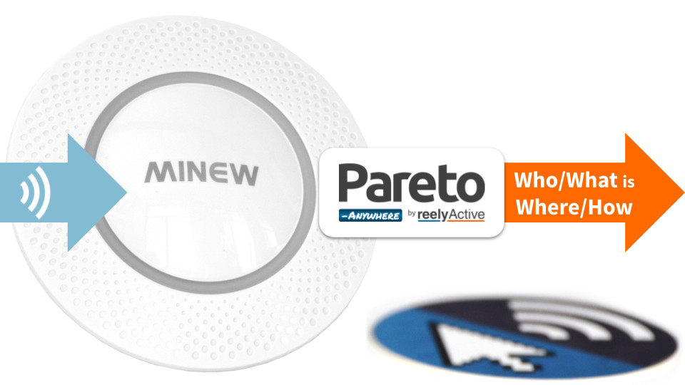
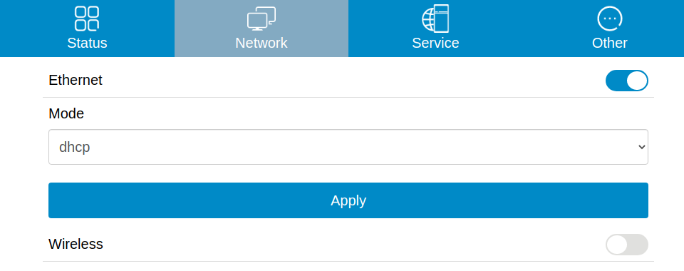
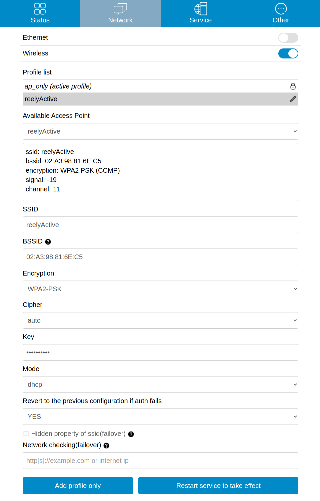
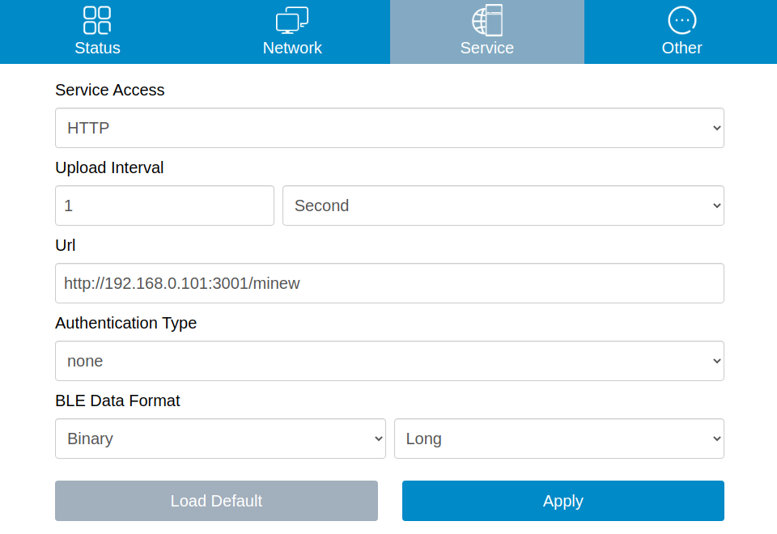
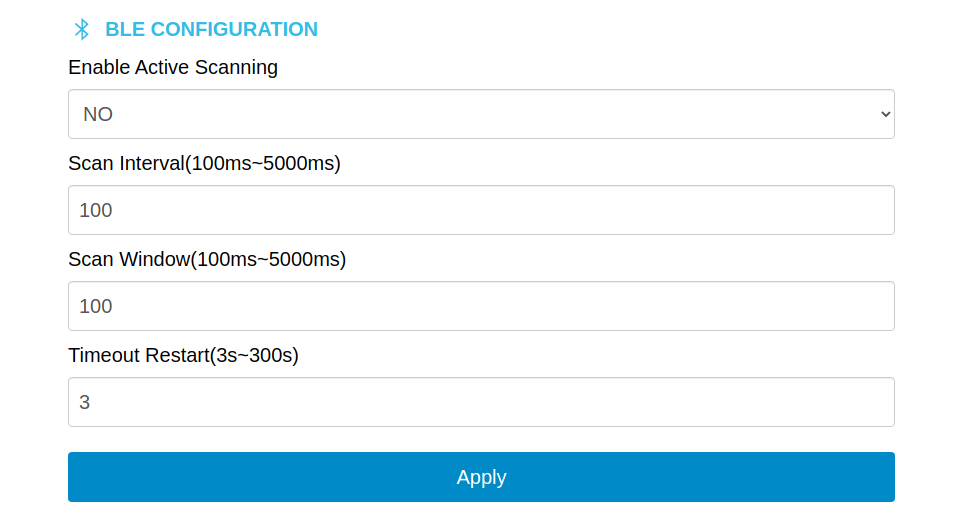

Configure a Minew G1 Gateway
Our step-by-step guide to configure the gateway to forward data for processing by Pareto Anywhere.
The TL;DR (Too Long; Didn't Read)
Learn how we at reelyActive configure the gateway for real-time location and more.
- What will this accomplish?
- The G1 will forward the Bluetooth Low Energy packets it observes to a server running Pareto Anywhere.
- What's Pareto Anywhere?
- Pareto Anywhere is open source software that makes sense of who/what is where/how, in any physical space, in real time.
- Is that all the G1 can do?
- No. The G1 can also provide WiFi connectivity as an AP or repeater and store offline data, but these are outside the scope of this tutorial.
Configure connectivity Step 1 of 3
Connect to the G1 via WiFi and configure its WiFi/Ethernet connectivity.
- How to connect?
- The G1 will operate as a WiFi access point, allowing any device to connect and update the configuration via a web browser.
- WiFi or Ethernet?
- The G1 can forward data over Ethernet or WiFi (operating as a WiFi client).
Connect to the G1 WiFi Access Point Part 1
Apply power to the gateway, ensure the ON/OFF button is pushed in and then:
- from a laptop or mobile look for a WiFi network with SSID GW-AC233Fxxxxxx (the x uniquely identify each gateway by its MAC address)
- connect to this WiFi network (no password required)
- from a web browser, navigate to the gateway at 192.168.99.1
- log in to the gateway with user admin (no password required)
Set an admin password Part 2
Set an admin password as follows so that subsequent logins require authentication:
- from the Status page (displayed after login) scroll down to the section entitled ADMIN PASSWORD
- select a password (ex: minew123) and enter this into both Password fields
- click Apply and observe a notification of successful change
Connect the gateway to the host network Part 3
Select the Network page (from the top blue bar) and then configure the gateway's connection to the host network either via Ethernet or WiFi , as follows:
By default, the gateway will be configured to connect to the host network via Ethernet, obtaining an IP address using DHCP. If this is the desired connection, then no action is required aside from the physical connection to the Ethernet network.
Select WiFi connectivity by clicking on the Wireless toggle then:
- create a new connection Profile by assigning a profile name
- from the Available Access Point dropdown select the target WiFi network—most of the remaining fields will be automatically entered
- enter the WiFi password in the Key field
- click on Restart service to take effect to create the connection profile and, when prompted in a pop-up message, click on Apply for the connection to be established immediately
As the Minew G1 supports simultaneous WiFi Access Point and Client modes, it should establish the connection with the host network while allowing the laptop or mobile to remain connected to complete the configuration in the following step.
Configure data capture and forwarding Step 2 of 3
Configure the G1 to forward data to a remote server running Pareto Anywhere.
- How is data forwarded?
- The G1 supports MQTT, TCP and HTTP. HTTP POST is natively supported by the barnowl-minew module of Pareto Anywhere.
- Which data format?
- Binary Long. Binary encoding is more efficient than JSON and the Long format preserves the packet payloads essential to most use cases.
Configure data forwarding Part 1
Select the Service page (from the top blue bar) and then configure data forwarding as follows:
- Service Access
- HTTP
- Upload Interval
- 1 second (or shorter)
- Url
- Pareto Anywhere server and route
For testing, use http://xxx.xxx.xxx.xxx:3001/minew replacing the x with the IP address of your computer on the host network. - Authentication Type
- None
- BLE Data Format
- Binary | Long
Click Apply to save the configuration.
Configure Bluetooth Low Energy observation Part 2
Select the Other page (from the top blue bar) and then configure the Bluetooth Low Energy observation parameters as follows:
- Enable Active Scanning
- No
- Scan Interval
- 100 (ms)
- Scan Window
- 100 (ms)
- Timeout Restart
- 3 (s)
The Scan Window must be equal to the the Scan Interval for the gateway to observe Bluetooth Low Energy advertising packets 100% of the time.
Click Apply to save the configuration.
Observe data in Pareto Anywhere Step 3 of 3
Run the Pareto Anywhere open source software to observe the forwarded data.
- How to run Pareto Anywhere?
- We provide friendly tutorials to install on a laptop (or any Linux server) and to install on a Raspberry Pi.
- Is there a quick and dirty way?
- Yes. Our barnowl-minew package provides a simple means to receive gateway data and log to the console (see below).
If a Pareto Anywhere installation based on the hlc-server package is already present and running on the target computer on the host network, the data forwarded by the gateway should be available in both the web apps and APIs.
References
-

Install our open source software suite on a laptop
Our step-by-step guide to run Pareto Anywhere on a laptop or personal computer.
-

Install our open source software suite on a Pi
Our step-by-step guide to run Pareto Anywhere on a Raspberry Pi.
To quickly validate that data is correctly received on the target computer on the host network, it is possible to run barnowl-minew standalone to listen for HTTP POSTs on port 3001 as follows:
git clone https://github.com/reelyactive/barnowl-minew.git npm install npm start
If the gateway is correctly configured, and at least one Bluetooth Low Energy device is advertising in range, raddec data should appear in the console.
Where to next?
Learn more about Pareto Anywhere, or continue exploring our open architecture and all its applications.
-

Hello Pareto Anywhere
A getting started guide oriented towards developers familiar with the open source software model. -

diyActive Home
The home for reelyActive developers.